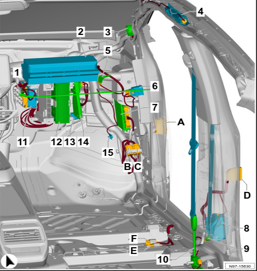
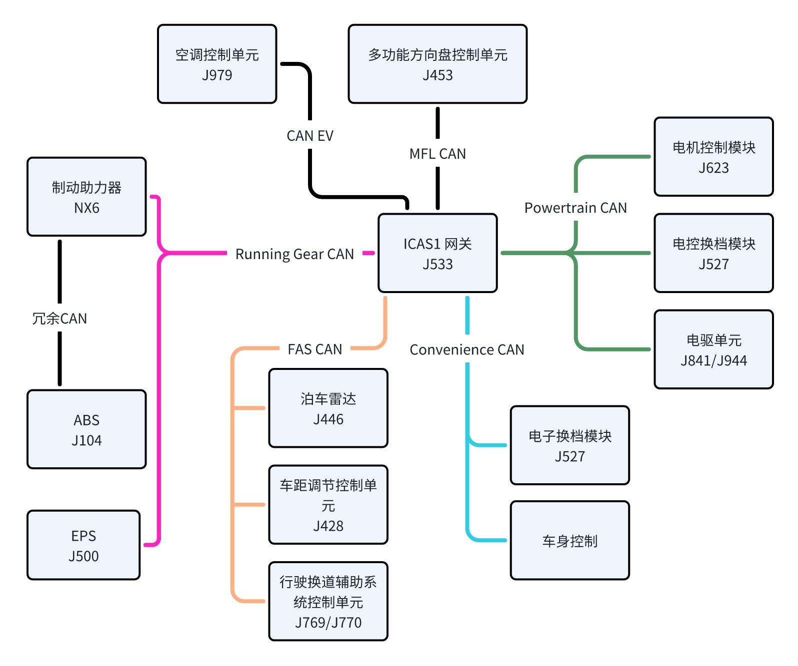
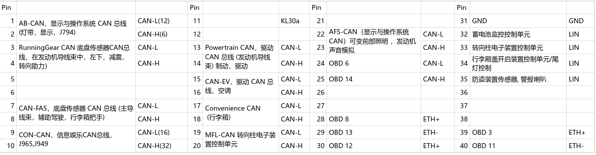
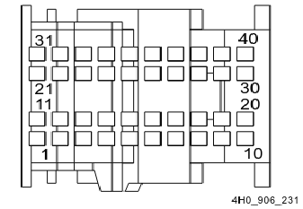

VW ID.4 ICAS1 车控分析
前言
2021年在360搭了一套ID.4台架环境，本来快要出成果了（拿到了ODIS内网权限，还有ICAS3的root），被安排出差去搭建展示车，后续工作计划被打乱。这期间不管是工作还是生活都遇到了许多糟心事，便停止了研究。
算是一个怨念项目吧，今年5月我在机缘巧合下又研究了ID.4的ICAS1的车控逻辑，还有一个怨念项目是CAN-Pick NG，写了一半又搁置了，不知道2025可不可以完成。
ID.4 是大众MEB平台，EE架构总共有两个域控制器，ICAS1, ICAS3。其中ICAS1(J533)与车身控制有关。
下图是J533的位置，位于序号13。将线控模块装载到此处，可以实现车身监测和控制。

车内ECU拓扑
Classic CAN： 500k
CAN-FD：仲裁域500k, 数据域2M。若要分析CAN-FD，ZLG设备最合适。
通过分析 ELSA电路图 和 大众内部培训资料，发现总线命名混乱，必须重新整理才能得到正确的CAN拓扑图。
J533总共有9路CAN，4路LIN（暂不需要），关键ECU如下。
- Running-Gear CAN (CAN-FD)
- J104 - ABS
- J500 - EPS，转向助力控制单元
- NX6 - 制动控制器 (Brake Booster)
- Powertrain CAN (CAN-FD)
- J623 - 电机控制模块 Engine/Motor Control Module
- J841/J944 - 电驱单元
- J234 - 气囊 （不能在这里Fuzzing，危险）
- Driver Assistance CAN，CAN-FAS (CAN-FD)
- J428 - 车距调节控制单元
- J446 - 泊车雷达控制单元
- J769/J770 - 行驶换道辅助系统控制单元
- J928 - 全景摄像头控制单元
- Convenience CAN (Classic)
- J527 - 电控换档模块 (Steering Column Electronics Control Module)
- J605 - 行李箱盖控制单元
- J764 - 转向柱锁
- …其他车身控制
- CAN-EV (CAN-FD)
- J979 - 加热与空调控制模块 (Heater and Air Conditioning Control Module)

J533连接器T40a定义
T40a 连接器和表格对应如下。


总线安全策略
网关隔离
多功能方向盘控制信号，由Convenience CAN接收，但是底盘CAN的ECU也能收到。底盘CAN发出的多功能方向盘控制信号，不会被J533转发到目标ECU。
CRC 校验
分析CAN总线变化，可以看到大部份报文的变化规律，第一字节随机，第二字节有规律递增。第一字节是CRC，第二字节是计数器。
CRC 初始值
参考OpenDBC github
/opendbc/can/common.cc volkswagen_mqb_checksum
可以获取VM MQB平台的 Checksum 初始值，但是ID.4有很多新的CRC初始值，我通过逆向分析并记录在下面了。
大部份控制信号有CRC和计数器，ECU不会校验某些不重要功能的CRC，比如天窗，车窗，鸣笛。但是会校验转向助力，行李箱盖开启，雨刮等影响驾驶的功能。
| Signal | CAN ID | CRC Seed |
|---|---|---|
| AAA_01 | 0x12DD5502 | 0x62,0x14,0x7c,0xa1,0x49,0x95,0x43,0x04,0x78,0x46,0x74,0x19,0x39,0x17,0x9f,0x1c |
| ACC_18 | 0x14D | 0x1a,0x65,0x81,0x96,0xc0,0xdf,0x11,0x92,0xd3,0x61,0xc6,0x95,0x8c,0x29,0x21,0xb5 |
| Airbag_01 | 0x040 | 0x40,0x40,0x40,0x40,0x40,0x40,0x40,0x40,0x40,0x40,0x40,0x40,0x40,0x40,0x40,0x40 |
| Airbag_02 | 0x520 | 0x44,0x44,0x44,0x44,0x44,0x44,0x44,0x44,0x44,0x44,0x44,0x44,0x44,0x44,0x44,0x44 |
| APS_Master | 0x380 | 0x13,0x13,0x13,0x13,0x13,0x13,0x13,0x13,0x13,0x13,0x13,0x13,0x13,0x13,0x13,0x13 |
| AWV_03 | 0x0DB | 0x09,0xfa,0xca,0x8e,0x62,0xd5,0xd1,0xf0,0x31,0xa0,0xaf,0xda,0x4d,0x1a,0x0a,0x97 |
| BEM_06 | 0x48B | 0x54,0xaf,0x8a,0xfb,0x0d,0x87,0x6a,0x0f,0x47,0x78,0x31,0x4f,0x35,0x28,0x82,0x6d |
| Blinkmodi_02 | 0x366 | 0xa9,0xbd,0xfb,0x3c,0x95,0x0f,0x75,0x3a,0x4f,0x19,0x59,0x6d,0xb2,0xe9,0xd1,0x97 |
| EA_01 | 0x1A4 | 0x69,0xbb,0x54,0xe6,0x4e,0x46,0x8d,0x7b,0xea,0x87,0xe9,0xb3,0x63,0xce,0xf8,0xbf |
| EA_02 | 0x1F0 | 0x2f,0x3c,0x22,0x60,0x18,0xeb,0x63,0x76,0xc5,0x91,0x0f,0x27,0x34,0x04,0x7f,0x02 |
| ELV_01 | 0x656 | 0xab,0x2f,0xd3,0x39,0x6f,0x37,0xfa,0x59,0xa4,0x70,0xce,0x11,0x54,0x82,0x62,0x56 |
| EM1_01 | 0x0C0 | 0x2f,0x44,0x72,0xd3,0x07,0xf2,0x39,0x09,0x8d,0x6f,0x57,0x20,0x37,0xf9,0x9b,0xfa |
| EML_02 | 0x1A555541 | 0x3e,0xb4,0x25,0xc1,0x31,0x1f,0xf1,0xd7,0xb1,0xbe,0xcc,0xe0,0x0f,0x46,0x51,0xb2 |
| EML_06 | 0x20A | 0x9d,0xe8,0x36,0xa1,0xca,0x3b,0x1d,0x33,0xe0,0xd5,0xbb,0x5f,0xae,0x3c,0x31,0x9f |
| ESC_50 | 0x102 | 0xd7,0x12,0x85,0x7e,0x0b,0x34,0xfa,0x16,0x7a,0x25,0x2d,0x8f,0x04,0x8e,0x5d,0x35 |
| ESC_51 | 0x0FC | 0x77,0x5c,0xa0,0x89,0x4b,0x7c,0xbb,0xd6,0x1f,0x6c,0x4f,0xf6,0x20,0x2b,0x43,0xdd |
| ESP_10 | 0x116 | 0xac,0xac,0xac,0xac,0xac,0xac,0xac,0xac,0xac,0xac,0xac,0xac,0xac,0xac,0xac,0xac |
| ESP_20 | 0x65D | 0xac,0xb3,0xab,0xeb,0x7a,0xe1,0x3b,0xf7,0x73,0xba,0x7c,0x9e,0x06,0x5f,0x02,0xd9 |
| ESP_21 | 0x0FD | 0xb4,0xef,0xf8,0x49,0x1e,0xe5,0xc2,0xc0,0x97,0x19,0x3c,0xc9,0xf1,0x98,0xd6,0x61 |
| ESP_24 | 0x31B | 0x67,0x8a,0xae,0x22,0x4d,0xd0,0x51,0x80,0x5c,0xb9,0xce,0x1e,0xdf,0x02,0x2d,0xd4 |
| Getriebe_11 | 0x0AD | 0x3f,0x69,0x39,0xdc,0x94,0xf9,0x14,0x64,0xd8,0x6a,0x34,0xce,0xa2,0x55,0xb5,0x2c |
| GRA_ACC_01 | 0x12B | 0x6a,0x38,0xb4,0x27,0x22,0xef,0xe1,0xbb,0xf8,0x80,0x84,0x49,0xc7,0x9e,0x1e,0x2b |
| HCA_01 | 0x126 | 0xda,0xda,0xda,0xda,0xda,0xda,0xda,0xda,0xda,0xda,0xda,0xda,0xda,0xda,0xda,0xda |
| HVL_01 | 0x12DD553D | 0x1d,0x82,0x7b,0x79,0xa5,0xee,0x3a,0xb9,0xb7,0xf9,0xe4,0x67,0x7f,0x97,0x11,0xad |
| IPA_01 | 0x138 | 0x77,0x4e,0x14,0x87,0xf2,0xf8,0xb2,0x61,0xf6,0xa4,0x52,0x94,0xd4,0x81,0x2a,0xb1 |
| IPA_02 | 0x16A9545F | 0xc6,0x7f,0x85,0xb6,0xe6,0xae,0xf8,0x26,0xb0,0x8c,0x19,0x10,0x5b,0x33,0x64,0x6c |
| Klemmen_Status_01 | 0x3C0 | 0xc3,0xc3,0xc3,0xc3,0xc3,0xc3,0xc3,0xc3,0xc3,0xc3,0xc3,0xc3,0xc3,0xc3,0xc3,0xc3 |
| LH_EPS_02 | 0x11D | 0x1c,0x1c,0x1c,0x1c,0x1c,0x1c,0x1c,0x1c,0x1c,0x1c,0x1c,0x1c,0x1c,0x1c,0x1c,0x1c |
| LH_EPS_03 | 0x09F | 0xf5,0xf5,0xf5,0xf5,0xf5,0xf5,0xf5,0xf5,0xf5,0xf5,0xf5,0xf5,0xf5,0xf5,0xf5,0xf5 |
| Licht_Anf_01 | 0x3D5 | 0xc5,0x39,0xc7,0xf9,0x92,0xd8,0x24,0xce,0xf1,0xb5,0x7a,0xc4,0xbc,0x60,0xe3,0xd1 |
| LWI_01 | 0x086 | 0x86,0x86,0x86,0x86,0x86,0x86,0x86,0x86,0x86,0x86,0x86,0x86,0x86,0x86,0x86,0x86 |
| Motor_14 | 0x3BE | 0x1f,0x28,0xc6,0x85,0xe6,0xf8,0xb0,0x19,0x5b,0x64,0x35,0x21,0xe4,0xf7,0x9c,0x24 |
| Motor_51 | 0x10B | 0x77,0x5c,0xa0,0x89,0x4b,0x7c,0xbb,0xd6,0x1f,0x6c,0x4f,0xf6,0x20,0x2b,0x43,0xdd |
| Motor_54 | 0x14C | 0x16,0x35,0x59,0x15,0x9a,0x2a,0x97,0xb8,0x0e,0x4e,0x30,0xcc,0xb3,0x07,0x01,0xad |
| Motor_Code_01 | 0x641 | 0x47,0x47,0x47,0x47,0x47,0x47,0x47,0x47,0x47,0x47,0x47,0x47,0x47,0x47,0x47,0x47 |
| Parken_01 | 0x206 | 0x09,0xfa,0xca,0x8e,0x62,0xd5,0xd1,0xf0,0x31,0xa0,0xaf,0xda,0x4d,0x1a,0x0a,0x97 |
| PLA_04 | 0x407 | 0xef,0x60,0x04,0xa8,0x0c,0x1c,0xda,0x07,0x36,0xd7,0x28,0x92,0xa9,0x88,0x2c,0x4a |
| QFK_01 | 0x13D | 0x20,0xca,0x68,0xd5,0x1b,0x31,0xe2,0xda,0x08,0x0a,0xd4,0xde,0x9c,0xe4,0x35,0x5b |
| RCTA_01 | 0x2B7 | 0x5e,0xc7,0x04,0x11,0x4d,0x27,0x0d,0x31,0x91,0xb8,0x62,0x76,0x64,0x09,0xeb,0xec |
| SAL_01 | 0x12DD54C9 | 0xde,0xa9,0x83,0x0b,0x0c,0x64,0x79,0x44,0x0f,0xf6,0xc6,0xc7,0x05,0x45,0xb7,0x59 |
| SAM_01 | 0x205 | 0x19,0x36,0xd4,0x1e,0x80,0x22,0xf4,0xb8,0xad,0x41,0x0b,0x3f,0x87,0x42,0x25,0x40 |
| SMLS_01 | 0x3D4 | 0xc3,0x79,0xbf,0xdb,0xe9,0x11,0x46,0x86,0x69,0xb6,0x9b,0x29,0x15,0x9c,0x45,0x0d |
| TA_01 | 0x26B | 0xce,0xcc,0xbd,0x69,0xa1,0x3c,0x18,0x76,0x0f,0x04,0xf2,0x3a,0x93,0x24,0x19,0x51 |
| TSG_FT_02 | 0x3E5 | 0xc4,0x6a,0x69,0x30,0xcf,0x61,0x58,0x51,0x1b,0x86,0x99,0xd3,0xf6,0x1d,0x9a,0x37 |
| VMM_01 | 0x105 | 0xde,0x0e,0xa7,0x1d,0xc3,0x83,0xbd,0x82,0x8c,0xa2,0x0c,0x7b,0x4d,0x3c,0x58,0x79 |
| VMM_02 | 0x139 | 0xed,0x03,0x1c,0x13,0xc6,0x23,0x78,0x7a,0x8b,0x40,0x14,0x51,0xbf,0x68,0x32,0xba |
CRC 算法
1 | MEB_Kennungsfolge = { |
CAN 信号
- Convenience CAN有以下信号通信，可用于状态读取，车身功能基本上可以通过此路CAN进行控制。包括空调，前后大灯，鸣笛，雨刮，车窗，车锁，车辆状态等信息。
1 | 0x12B GRA_ACC_01 自适应巡航，GRA系统，ACC， |
其他信号
1 | 0x184 |
控制转向
要求档位在D/B或者R档。
以下五个信号可以用于控制方向盘。
LWI_01 Lenkwinkelsensor
LH_EPS_03 Lenkhilfe Electric Power Steering
HCA_01 Heading Control Assist
GRA_ACC_01 Geschwindigkeitsregelanlage & Adaptive Cruise Control
PLA_05 Park Lane Assist
组合使用0x86, 0x9f, 0x126, 0x12b, 0x302信号，在CAN-FAS发送，可以实现泊车方向盘转向功能。
组合使用0x86, 0x9f, 0x302信号，在Gear-Running CAN发送，可以实现方向盘转向。
其中0x9f(LH_EPS_03)和0x302(PLA_05)两个信号都可以直接控制方向盘。
0x302没有CRC校验，因此控制方向盘比0x9f容易
DEMO
1 | def create_pla_control(sendestatus, positive, degree): |
RPi CAN HAT
控制方向盘Demo
1 | import os |
注意事项
- 离开车辆之前，确保CAN总线处于接通状态，否则会大量耗电。
- 不要对Powertrain 和Running Gear CAN 进行 Fuzzing，可能直接会导致人身伤害，另外，也可能导致ECU异常，产生潜在隐患。比如转向灯失效，后视镜无法打开。